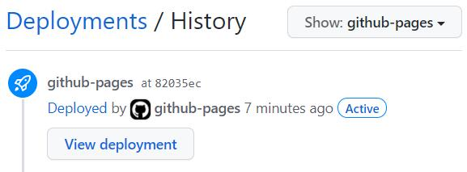

基于Github Pages的个人网站(1)——建站记录
📅 2021-07-29
🔄 2021-07-29
⌚ Reading time: 2 min
1.搭主页之前
为什么我会想搭一个自己的网站呢？
首先是经验积累。把做过的东西像集卡游戏一样收集起来也是一件挺好玩的事情。其次内容洁癖，要对自己的内容有绝对的控制权，不允许有广告这种不可控内容出现在自己的页面上。
基于以上的想法，商业博客基本上就被排除掉了。一开始我用的是GitHub，.md文档可以在GitHub网页上直接展示，有一半博客的功能，而且页面相比CSDN之类的足够干净。
用了两天以后发现，在网页上只能显示文字和图片，就像上面这样。在本地的VS Code上可以通过插件实现latex公式，然而网页打开就是一串代码，当然截图插入也是个方法，最重要的是，图片大小不可控。在使用GitHub的这几天，我发现有许多人都有基于Github Pages的自己的主页，可以实现各种功能，这就正好和我的需求对上了，于是经过几天试验，有了目前这个网站。
2.整体设计思路
我的主页的内容按照下面这几个部分来设计的：
- 简历。突出一个个人特征。这部分是给别人看的，放在首页，如果有幸有人不小心点进了我的主页，那么不看也得看，无形之中推销自己。
- 传统的技术博客。类似于CSDN的中短文章，项目经历展示，开发经验积累，别人看，自己也看。
- 长篇幅的笔记。大节小节带数学公式，知识总结沉淀。这部分是给自己看的，顺便给别人看，当然由于内容过于臃肿我觉得进来的人几乎不会看的。
在个人简历中我会把这个网页放在一个突出位置，除了实体纸质简历，引导看我简历的人来到这个网页。进入主页直接就有个人联系方式以及社交账号，主页下拉是一个简单的个人介绍，此外还有一些项目经历和我更完整的工作技能点，详细的知识结构。对于一个陌生人来说，这是我最想让他们看到的东西。这个网站更像是个“大简历”，一个实时更新，全面展示的简历。对我感兴趣的人会点击导航栏里“关于我”查看我更详细的个人经历，对我的项目感兴趣的人会点击“我的项目”去看我的开发经验。对我知识结构感兴趣的人会点击“学习笔记”去看我的知识储备。
3.方案实现
3.1 GitHub Pages是什么
我的GitHub ID是@1xyMeng{:target="_blank"}，新建一个名为1xyMeng.github.io{:target="_blank"}的仓库，在仓库Setting选项卡里的GitHub Pages进行如下设置
这时候1xyMeng.github.io这个地址已经是一个可以访问的网站了。再新建一个随便什么名字的仓库，和上面一样的设置
这时候1xyMeng.github.io/learning也是一个可以访问的网站了，而且对比一下这两个地址，很有意思，找到一点感觉了。
这时候如果在1xyMeng.github.io仓库的README.md里面加一行
[点击跳转](https://1xyMeng.github.io/learning)
使用浏览器访问1xyMeng.github.io，可以看到多出来的一行内容，点一下果然会跳到learning页面。
以上就是我的网站的最基本的逻辑。把仓库里的内容变成一个可以访问的网页就是GitHub Pages帮我们办到的事情。
注1：修改了文件后，需要等几分钟，毕竟GitHub Pages帮我们办事情也是要花时间的，在仓库右侧Environments可以查看当前状态。 
注2：markdown语法
3.2 设计实现
上面实际上设计了两个最简单的网页，并且实现了跳转。其实和你现在正在看的这个差的已经不多了（没开玩笑）。无非是我的这个网页多了一些图片，文字更多，并且有了排版。
网页的底层设计逻辑是样式+文字，样式实现是代码，文字当然还是文字。幸运的是，样式代码已经由前辈为我们准备了大量的开源的、像函数库一样的模板，我们只需要把文字当作参数传进去就可以了。文字内容被写在markdown文档里，自动变成好看的样式。也是就说，在将来实际运行的网站里，网页跳转仍旧是用上面的简单语句实现的，不需要我们进行其他多余的操作。
斜体部分暂时不明白没关系，后面还会详细的解释这个思想。
上图展示了4个Github代码仓库之间的关系，每个代码仓库都对应本地的一个文件夹，因此本地有4个同名文件夹，这里还有个本地与github的同步问题，后面工作流有介绍。
至于仓库里面的代码，当然是找现成的拿来用，也就是套模板。
4.套模板
这一步是精髓😂😂😂，用别人开源的东西装饰自己的网站，看起来很厉害的样子。实质上我就是个调包侠罢了。
模板可以去Jekyll Themes找，源码放到username.github.io仓库里就可以看到效果了。
_posts文件夹里都会有示例文章，文件名也要注意格式，比如本文的文件名为2021-07-01-website1.md，文档打开最前面就是“样式函数”
---
layout: post
categories: 效率工具
title: 基于Github Pages的个人网站(1)——建站记录
date: 2021-07-29
---
比如本文指定了使用post样式，分类到效率工具，标题为基于Github Pages的个人网站(1)——建站记录，显示创建日期为2021-07-29，理解为函数与参数的关系没有任何问题。后面的所有正文实际上也可以理解为参数。
Jekyll将构成一个网站原始文件分为模板和内容两个部分，通过渲染器转化成一个完整的可发布的静态网站。这使得不懂前端的人可以专注于内容创作，用标记语言来写文章（Markdown，Textile，HTML），然后Jekyll就会帮我套入一个布局中，生成的就是自己的主页。/* 官网复制 */
网站的底层是html+css，这个工具将网页代码做了封装，文章标题内容就像函数参数一样传递到布局上。参考这篇文章的源文件，和你现在看的做一下对比。我在写这篇文章的时候完全没有考虑格式的问题，只是使用了简单的markdown语法，这也是使用这个工具建立个人网站的原因之一，它足够简单。
其中要关注的其他文件夹：
-
_layouts：文章的模板。有点函数的意思，文件名类比函数名，不同的文件是不同的布局样式。 -
_includes：包含到布局或文章中可以被重复使用，有点头文件的意思。
此外，
_config.yml文件保存全局配置数据，包含许多网页自带功能开关设置。
GitHub pages通过这些文件自动生成一个可以访问的网站，如果编译错误会发个邮件提醒
具体的文件里的代码，本来想写点东西的，但是感觉我也完全不懂HTML，还是不乱输出没用的内容了。总之我的方法就是：多试试。删掉以后看看哪里会出问题，那么这块代码基本上就是管这个功能的😂😂😂。
5.工作流
这里要说git与Github同步的问题，详细的教程，可以参考这个书：《GitHub入门与实践》。
在实际上手操作之前，先来看看数据流向
Visual Studio Code是我大多数时间面对的窗口，网页里的文字内容修改完成后，使用GitAhead工具把代码同步到Github。
当然也可以直接使用Visual Studio Code里的终端命令行，甚至直接使用VSC的插件也可以，看个人习惯。
成功push上去之后，Github Pages就开始处理数据了，如果没有错误，就会在对应地址生成网站内容。
6.其他小细节
6.1 使用自己的域名
如果你看的足够仔细，就会发现我的这个网站并不是github.io结尾的，而是一个更有个人特色的网址。这个也很简单，需要花点小钱，不多。
去腾讯云或者阿里云注册个号，如果你讨厌阿里，那么去腾讯云注册，反之亦然。这里拿腾讯云举例子，注册好以后，该绑定的绑定，该认证的认证，找到注册域名，跟着步骤操作就好。
注册完成后进入域名解析选项，添加下面两条记录
| 主机记录 | 记录类型 | 线路类型 | 记录值 | TTL |
|---|---|---|---|---|
| @ | CNAME | 默认 | 1xyMeng.github.io | 600 |
| www | CNAME | 默认 | 1xyMeng.github.io | 600 |
最后去Github仓库里，找到Github Pages设置，找到Custom domain，输入你注册的域名保存以后，等等，要有耐心，这一步得花点时间。
记得勾选Enforce HTTPS。
这时候，就可以用新注册的域名访问网页了。
6.2 本地预览网页效果
每次小修改都需要commit然后push，效率比较低，还有一种很高效的方法，即在本地直接预览网页效果，全部改好后一次性push到GitHub仓库里。
需要在本地安装Jekyll，安装好后，进入本地的文件夹执行jekyll serve指令，就可以在地址http://localhost:4000/生成一个预览网页，随时修改随时预览很好。
这时候数据流大概是这样的
本地预览修改完成后，再用git去push到Github，效果和红色箭头是一样的。
6.3 评论功能
有些模板是自带的，但是这里可以自己把这个功能缝合上去，也正好拆开来看看模板是怎么改的。
评论功能有好多，这里我们使用gittalk.
在缝合代码前，先说一下GitHub的社交属性。在GitHub之前，代码是围绕项目的，人的属性比较弱。有了GitHub后，代码是围绕人的，我们可以很容易的发现一个人在写什么代码，在做什么项目，打开项目如果有Issue标签，我们还可以提问或者评论。我曾经发现一个有意思的项目：好耶 是女装，这个项目设立的初衷是用来学习克隆项目，创建分支，提交和同步修改，到合并分支请求的整套流程的，但是我们可以在Issues里看到各种各样好玩的程序员的评论。

这个仓库的社交属性拉满了。也可以认为Issues就是对这个仓库的评论。
gittalk的本质就是Issues，把Issues的数据拿过来镶嵌到自己的网站里作为评论展示。
因此需要有两个事情去做：
- 镶嵌评论模块
- 建立和issues的联系
在gittalk项目的readme里可以找到使用方法，也很简单。在需要插入评论的位置使用下面这段代码
<link rel="stylesheet" href="https://unpkg.com/gitalk/dist/gitalk.css">
<script src="https://unpkg.com/gitalk@latest/dist/gitalk.min.js"></script>
<div id="gitalk-container"></div>
<script>
var gitalk = new Gitalk({
clientID: '**************',
clientSecret: '*****************',
repo: 'xym-ee.github.io',
owner: 'xym-ee',
admin: ['xym-ee'],
});
gitalk.render('gitalk-container');
</script>
就可以添加评论模块。具体的代码含义不懂，但是不影响。里面有一些比较重要的参数就是去建立起评论模块和Github Issues的联系的。其中的clientID和clientSecret需要去Github的开发者设置里新建一个OAuth App，生成以后复制到这里就可以了。
repo是用来作为评论的Issues的仓库名。更细节的设置可以参考这个开源项目的readme。
部署以后需要登陆一下，这个插件就会自动在repo新建一个issue，这个issue就是用作其他人留言。具体效果可以拖到这篇文章的最下面。
软件整理
个人认为理解前面的思路更重要，软件安装，编译之类的问题网上全都可以找到，所以前面也没有放安装链接，我把所有需要的软件和安装链接都放在这里了。重装系统后从下面开始操作。
git
有了git，GitAhead才能工作
- ②（非必要）安装GitAhead
gitGUI工具，用起来也挺方便。当然简单粗暴命令行也不错。
VS Code与插件
编辑器。
-
②VSC的功能性扩展
- Chinese (Simplified) Language Pack for Visual Studio Code
- GitLens — Git supercharged
- Markdown Preview Enhanced
-
③VSC的皮肤代码高亮扩展
- Fluent Icons
- Material Icon Theme
复制名字去VScode的扩展里查找。
Jekyll
安装参考A step-by-step guide to setting up Jekyll on Windows by @juthilo和官网文档Windows 运行Jekyll。
虽然不知道这个是干嘛的，但是装上才能用，装就完事了。下载2.7.2版本的，太新的好像不太行。（反复试了好多次，一定要装2.7.2）。
-
②Jekyll使用终端安装 终端输入命令
$ gem install jekyll -
※装好以后测试一下
$ jekyll new . --force # 把当前目录初始化为工作区，有其他文件加--force
$ jekyll serve # => 一个开发服务器将会运行在 http://localhost:4000/
如果运行别人的模板报错，那就缺啥装啥，不行就Google百度，基本上都有对应解决办法。
比较常见的，缺包，按照下面的格式安装。
#Could not find rake-12.0.0 in any of the sources (Bundler::GemNotFound)
$ gem install rake -v 12.0.0